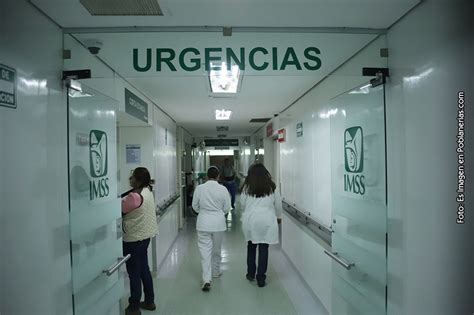

Nuestros servicios
Nos destacamos en la region por contar con uno de los equipos de Laboratorio mas modernos, a su vez contamos con servicio de Internacion atendidos por los mejores profesionales del area. Disponemos de consultorios a disposición para cualquier consulta y un area de Emergencias adaptado para atender urgencias de cualquier tipo.
Contacto
Urgencias
Nuestro servicio de urgencias está diseñado para brindar atención médica rápida y eficaz, las 24 horas del día, los 365 días del año. Contamos con un equipo multidisciplinario de profesionales altamente capacitados en la atención de emergencias de todo tipo, desde traumatismos y accidentes hasta complicaciones médicas críticas. Equipado con tecnología de última generación y protocolos médicos de primera línea, nuestro sanatorio garantiza una respuesta inmediata, priorizando la vida y el bienestar de nuestros pacientes. La atención personalizada, junto con un ambiente seguro y controlado, asegura que cada emergencia sea tratada con el mayor cuidado y dedicación, minimizando tiempos de espera y optimizando los resultados.
Laboratorio
Nuestro laboratorio cuenta con instalaciones de última generación, diseñadas para ofrecer un entorno seguro y eficiente para el diagnóstico clínico. Equipado con tecnología avanzada, garantizamos resultados precisos en el menor tiempo posible. Nuestras instalaciones están supervisadas por un equipo de profesionales altamente capacitados, comprometidos con brindar un servicio de calidad, comodidad y confidencialidad a cada uno de nuestros pacientes. Nos destacamos por la rápida entrega de análisis y estudios especializados, contribuyendo de manera decisiva al bienestar y tratamiento de quienes confían en nuestro sanatorio.